Loading model...
Loading model...
Turn on Mouse Control and use these gestures to control the pointer inside the app.
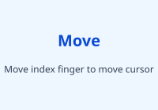
Move your index finger to move the pointer.
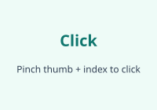
Pinch thumb and index finger together to click.
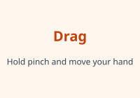
Keep the pinch held to drag objects or buttons.
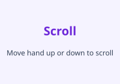
Move the hand up and down to scroll the page.
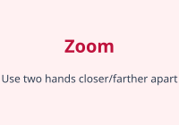
Use two hands farther apart or closer together to zoom.
Use these hand signs in front of the camera to trigger sign detection.
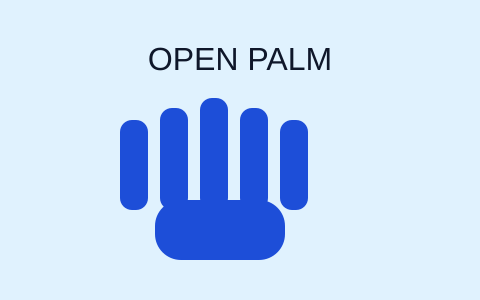
Show all fingers straight and spread.
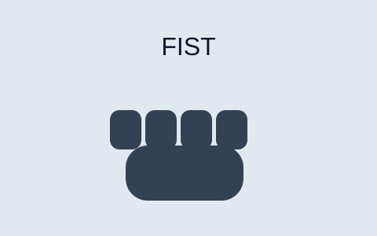
Close all fingers into your palm.
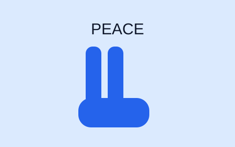
Raise index and middle finger only.
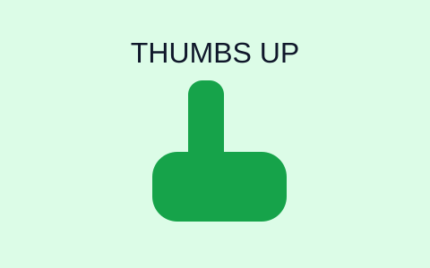
Keep thumb up, other fingers folded.
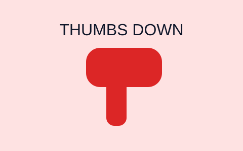
Point thumb down with folded fingers.
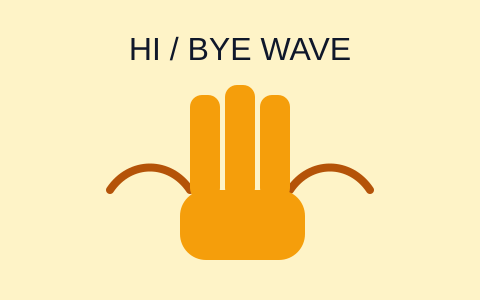
Wave your hand left and right clearly.
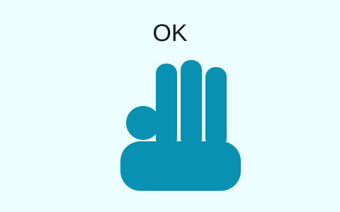
Touch thumb and index, keep the other fingers up.
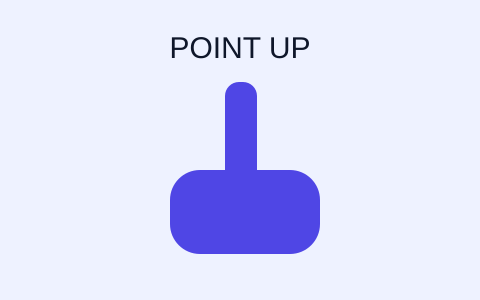
Raise only index finger and fold other fingers.
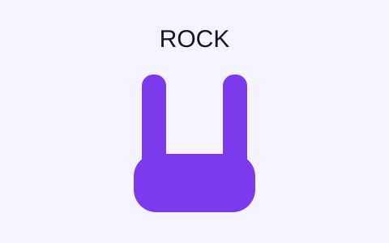
Raise index and pinky fingers; fold middle and ring.
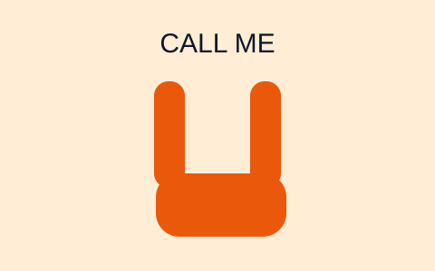
Raise thumb and pinky, keep middle fingers folded.
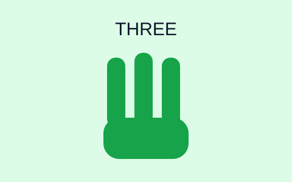
Raise index, middle, ring fingers and fold pinky.
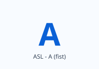
ASL - A (fist)
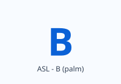
ASL - B (palm)
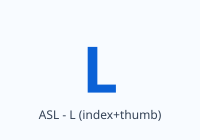
ASL - L (index + thumb)
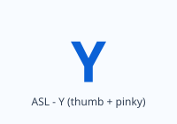
ASL - Y (thumb + pinky)
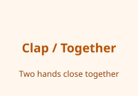
Bring both hands close together to indicate together/clap.
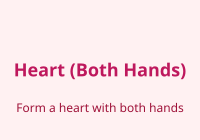
Form a heart using both hands.
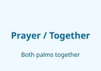
Palms together gesture for both hands.